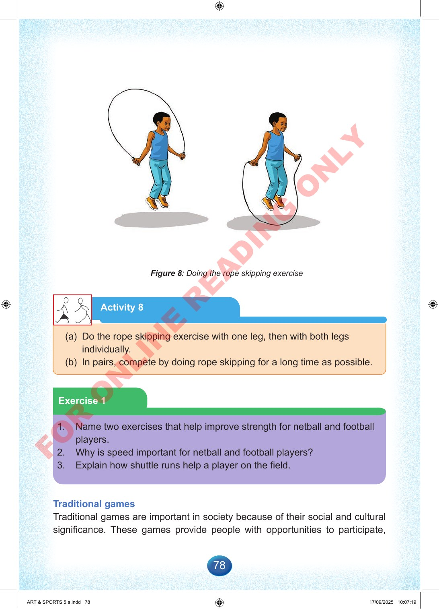

78
Figure
8:
Doing
the
rope
skipping
exercise
Activity
8
(a)
Do
the
rope
skipping
exercise
with
one
leg,
then
with
both
legs
individually.
(b)
In
pairs,
compete
by
doing
rope
skipping
for
a
long
time
as
possible.
Exercise
1
1.
Name
two
exercises
that
help
improve
strength
for
netball
and
football
players.
2.
Why
is
speed
important
for
netball
and
football
players?
3.
Explain
how
shuttle
runs
help
a
player
on
the
field.
Traditional
games
Traditional
games
are
important
in
society
because
of
their
social
and
cultural
significance.
These
games
provide
people
with
opportunities
to
participate,
ART
&
SPORTS
5
a.indd
78
ART
&
SPORTS
5
a.indd
78
17/09/2025
10:07:19
17/09/2025
10:07:19
F
O
R
O
N
L
I
N
E
R
E
A
D
I
N
G
O
N
L
Y